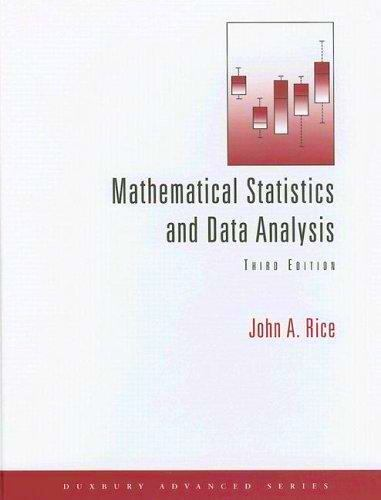
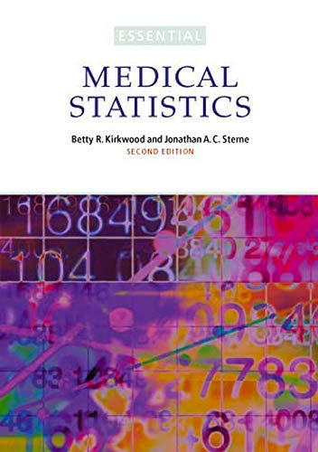
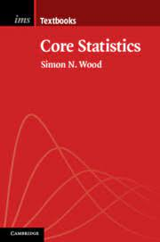
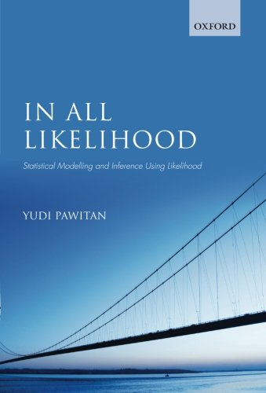
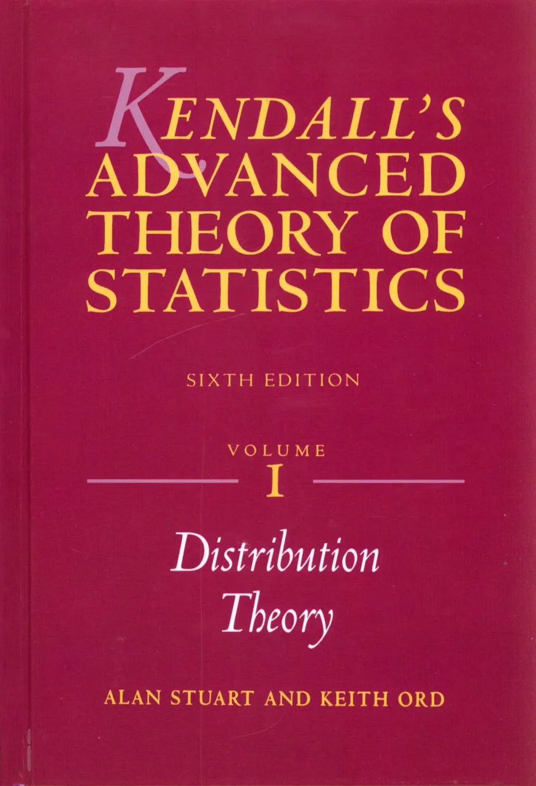

Recommended Statistics Books
Book recommendations for those looking to reinforce their knowledge of undergraduate and advanced statistics.
Statistics and Statistical Inference Books
While teaching a course on supervised learning last year, several students asked about what books I would recommended on statistical inference and modelling.
For context, the students on this course are all highly numerate and studying at the postgraduate level. What makes this request challenging is the broad range of student backgrounds, some students had a maths degree but the majority are trained and work as engineers, physicists or computer scientists.
This variety in backgrounds and exposure to undergraduate level statistics made recommending a single book difficult. Instead, I compiled a list of books that I have enjoyed or found useful. For each book I tried to give some guidance on whether it might match with their current statistical knowledge and what they are trying to achieve. I gave a brief description of the level and target audience of each text, which I reproduce below.
When evaluating whether these resources might suit your current needs, I find it helpful to skim through a section on a topic that you already know (such as linear regression). This is usually the fastest and most reliable way to assess if the book is going to be a good fit for you.
This list is by no means exhaustive. If you know of any gems that I have not included in this list, please do let me know!
Mathematical Statistics and Data Analysis - John A. Rice

Rice (2007) covers the basics of probability and statistics usually contained in the first couple of undergraduate statistics courses. Generally the first university courses are a bit dry, building up the required knowledge to do interesting things. This book is slightly better than the average treatment in terms of readability and is fairly comprehensive, making it well suited as a reference text. This is a book full of all the stuff you might once have known but have now forgotten, or never studied before.
Essential Medical Statistics - Betty Kirkwood and Jonathan Sterne

Kirkwood and Sterne (2010) focuses on more advanced topics in statistics, such as inference, hypothesis testing and modelling. However, it approaches these from an applications perspective. While all of the applications it uses are from medical statistics, the authors give sufficient context that you do not need to be familiar with this area before reading. This is a very readable book, with a moderate amount of mathematical detail. I find myself revisiting it quite often.
Core Statistics - Simon Wood

Wood (2015) gives an introduction to the core topics in statistics aimed at new graduate-level students. It is mathematically dense but written in an approachable manner and (unsurprisingly) covers all the core ideas of statistics. This means that is often a good source to get an overview of a topic and to cover the key points in that area quickly. It is probably wise to supplement this with a more applied text to see worked examples and to a more detailed text for topics that you need to explore in greater detail.
In All Likelihood - Yudi Pawitan

Pawitan (2001) focuses entirely on likelihood inference and covers both theory and applications in a great deal of detail. I highly recommend this to supplement frequentist topics covered in core statistics and the elements of statistical learning. It builds up from very little assumed knowledge but also goes on to cover some very advanced topics in later chapters.
Kendall’s Advanced Theory of Statistics - Alan Stuart et al.

Kendall, Stuart, and Ord (1987) is an alternative to In All Likelihood, aimed at a similar audience and level. Split over several volumes this is good to do a deep-dive into a particular topic but probably not one to try and read cover to cover!
Bayesian Statistics
We only consider frequentist approaches to inference in this course. However, I would be remiss to not include some Bayesian texts and leave you with the impression that classical or frequentist approaches to statistics are the only option.
Many of the topics we cover in supervised learning can be considered from a Bayesian perspective. A Bayesian statistician does not treat our model parameters as fixed but unknown quantities, instead they consider the parameters as random variables and use probability distributions to describe their (or our) beliefs about the parameter values.
You might find the following books useful, either during or after the Bayesian inference course. The former is more theoretical, while the latter has a more applied focus.
Kendall’s advanced theory of statistics. Vol. 2B, Bayesian inference. (O’Hagan and Forster 2004)
Bayesian Data Analysis - Gelman et al. (Gelman et al. 2013)
References
Reuse
Citation
@online{varty2022,
author = {Varty, Zak},
title = {Recommended {Statistics} {Books}},
date = {2022-10-10},
url = {https://www.zakvarty.com/blog/2022-10-10-statistics-books},
langid = {en}
}